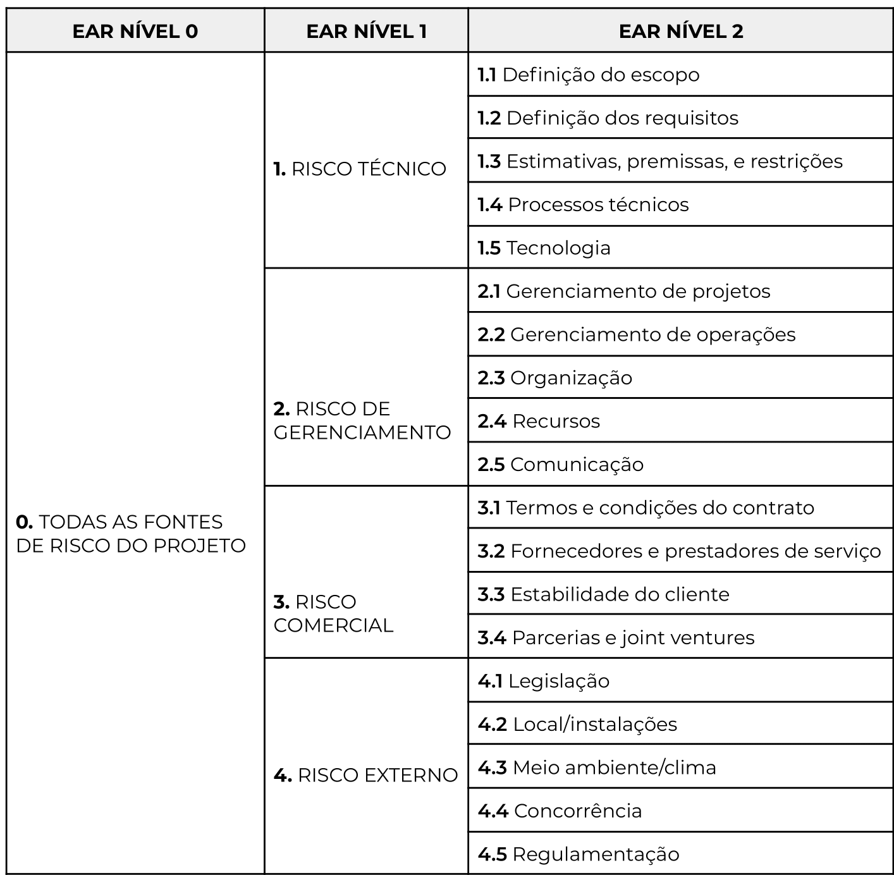

GERENCIAMENTO DE RISCOS
Histórico de versão
| Data | Versão | Descrição | Autor(es) |
|---|---|---|---|
| 20.08.2021 | 0.1 | Criação do documento | Bruna Almeida |
| 21.08.2021 | 0.2 | Levantamento dos riscos e plano de contingência | Bruna Almeida, Damarcones Porto |
| 22.08.2021 | 0.3 | Adiciona conteúdo ao documento | Bruna Almeida |
Objetivo do documento
O gerenciamento dos riscos do projeto tem por objetivo diminuir a probabilidade e/ou o impacto de riscos negativos, a fim de otimizar as chances de sucesso do projeto. (Guia PMBOK®)
Gerenciamento de riscos
Baseando-se na metodologia de gerenciamento dos riscos de projeto apresentada no livro Project Management Body of Knowledge (PMBOK), os riscos levantados pelo grupo serão classificados quanto à prioridade, que é definida a partir do produto entre os pesos de impacto do risco ao projeto e probabilidade de ocorrência.
Prioridade = Impacto * Probabilidade
O impacto do risco ao projeto é categorizado em cinco níveis:
- Muito baixo: De pouca relevância para o projeto - Peso 1
- Baixo: Expressa pouco impacto sobre o projeto - Peso 2
- Médio: Impacto considerável - Peso 3
- Alto: Grande impacto no projeto - Peso 4
- Muito alto: Impede o prosseguimento do projeto - Peso 5
Da mesma forma, a categorização da probabilidade do risco se dá em cinco níveis de porcentagem:
- Muito baixa: intervalo de 0\% à 20\% - Peso 1
- Baixa: intervalo de 21\% à 40\% - Peso 2
- Média: intervalo de 41\% à 60\% - Peso 3
- Alta: intervalo de 61\% à 80\% - Peso 4
- Muito alta: intervalo de 81\% à 100\% - Peso 5
Quanto à Estrutura Analítica de Riscos (EAR), será utilizado um modelo personalizado que se baseia nos objetivos do projeto. A figura demonstra a EAR planejada para o projeto Robô Garçom.

Por fim, as tabelas a seguir apresentam os riscos levantados, classificados a partir da categorização da EAR e da prioridade.
Riscos técnicos
| ID | Descrição do risco | Consequência | Impacto | Probabilidade | Prioridade |
|---|---|---|---|---|---|
| RT01 | Trabalho fora do escopo | Gasto de tempo e energia. | 3 | 2 | 6 |
| RT02 | Dificuldade da equipe com as tecnologias utilizadas | Atraso nas entregas, dificuldade de interação entre a equipe e baixa qualidade do produto final. | 4 | 2 | 8 |
| RT03 | Escolha de tecnologias inadequados ao projeto | Não entrega do produto ou entrega inferior. | 5 | 2 | 10 |
| RT04 | Foco em atividades pouco relevantes para o projeto | Tempo e energia desperdiçados. | 2 | 2 | 4 |
| RT05 | Falta de perícia na integração software/eletrônica | Não entrega do produto ou entrega inferior. | 5 | 3 | 15 |
| RT06 | Algoritmo de procura não ser adequado à necessidade do Robô Garçom | Solução não otimizada, aumentando a probabilidade de erros ou defeitos. | 5 | 4 | 20 |
Riscos de gerenciamento
| ID | Descrição do risco | Consequência | Impacto | Probabilidade | Prioridade |
|---|---|---|---|---|---|
| RG01 | Desistência de um membro | Sobrecarga de trabalho para o restante da equipe. | 4 | 2 | 8 |
| RG02 | Falta de comunicação entre membros | Atraso nas entregas e retrabalho. | 3 | 3 | 9 |
| RG03 | Mal gerenciamento da equipe | Desmotivação da equipe e produto final de baixa qualidade. | 5 | 2 | 10 |
| RG04 | Conflitos internos | Desmotivação da equipe e desistência de membros. | 4 | 3 | 12 |
| RG05 | Cronograma inviável | Sobrecarga da equipe e não cumprimento de prazos. | 4 | 2 | 8 |
| RG06 | Sobrecarga de membros | Desmotivação da equipe e entregas de baixa qualidade. | 4 | 3 | 12 |
| RG07 | Atraso nas entregas | Impedimento da continuidade do projeto. | 5 | 3 | 15 |
Riscos comerciais
| ID | Descrição do risco | Consequência | Impacto | Probabilidade | Prioridade |
|---|---|---|---|---|---|
| RC01 | Fornecedores entregarem insumos de baixa qualidade | Atraso na produção. | 5 | 3 | 15 |
| RC02 | Atraso na entrega de insumos | Impedimento da continuidade do projeto. | 5 | 4 | 20 |
| RC03 | Troca de prestadores de serviço | Atraso na produção. | 3 | 3 | 9 |
| RC04 | Aumento de custo da matéria-prima | Aumento do valor do produto final | 3 | 3 | 9 |
| RC05 | Quebra de contrato | Multa e perda de um possível cliente para o produto. | 5 | 4 | 20 |
Riscos externos
| ID | Descrição do risco | Consequência | Impacto | Probabilidade | Prioridade |
|---|---|---|---|---|---|
| RE01 | Restaurante não ter infraestrutura adequada | Quebra de contrato por inviabilidade de uso do produto. | 5 | 2 | 10 |
| RE02 | Produto concorrente com um custo-benefício maior | Diminuição do número de possíveis clientes. | 4 | 3 | 12 |
| RE03 | Produto não ser aprovado em testes de qualidade | Reestruturação de todo o projeto. | 5 | 2 | 10 |
| RE04 | Produto não atender a alguma norma técnica ou legislativa | Reestruturação de todo o projeto. | 5 | 2 | 10 |
Plano de contingência
Agora são apresentadas medidas preventivas - para evitar que os riscos apresentados anteriormente ocorram efetivamente -, e medidas corretivas, com o objetivo de amenizar o impacto dos riscos anteriormente apresentados no projeto.
| ID | Medidas Preventivas | Medidas Corretivas |
|---|---|---|
| RT01 | Ter um entendimento maior sobre o projeto como um todo e manter comunicação constante com os membros de outros núcleos | Revisar o escopo e refatorá-lo, se necessário. |
| RT02 | e Fazer um levantamento em equipe sobre as tecnologias conhecidas e criar um quadro de conhecimentos | Fazer uma nova escolha de tecnologias de acordo com o perfil da equipe. |
| RT03 | Fazer um levantamento em equipe sobre as tecnologias que sejam mais adequadas às necessidades do projeto | Fazer uma nova escolha de tecnologias de acordo com a necessidade do produto. |
| RT04 | Priorizar as atividades essenciais para o projeto | Repensar os objetivos do projeto e redefinir as tarefas. |
| RT05 | Constante comunicação entre os núcleos de software e elêtronica, para alinhamento de ideias. | Aumentar o nível de conhecimento acerca das técnicas de integração e melhorar a interação entre os núcleos. |
| RT06 | Fazer um levantamento da melhor tecnologia que satisfaça esse requisito. | Pesquisar novos algoritmos para determinar qual será mais adequado ao projeto. |
| RG01 | Motivação constante da equipe. | Redistribuição de tarefas. |
| RG02 | Reuniões constantes para estimular o entrosamento da equipe. | Procurar o problema que está causando a falta de comunicação. |
| RG03 | Buscar feedbacks constantes sobre o desempenho da equipe de trabalho. | Mudança de metodologia de gerenciamento. |
| RG04 | Manter diálogo constante e amigável. | O gerente deve buscar resolver o conflito entre os membros. |
| RG05 | Planejamento com base nas entregas do projeto, tentando sempre manter um período de revisão antes de cada entrega. | Priorização e redistribuição de tarefas. |
| RG06 | Distribuição proporção de tarefas entre os membros. | Redistribuição de tarefas. |
| RG07 | Determinar um prazo de acordo com o nível de dificuldade da tarefa. | Aumentar o prazo de entrega da tarefa ou designar mais responsáveis para concluí-la. |
| RC01 | Escolher fornecedores com boa reputação. | Buscar novos fornecedores. |
| RC02 | Considerar no prazo uma margem para atrasos. | Dar prosseguimento em outras etapas do projeto que não necessitam do insumo em atraso. |
| RC03 | Ter em mãos uma lista com outros prestadores de serviço, em caso de inviabilidade do fornecedor principal. | Contatar novos prestadores de serviço o mais rápido possível. |
| RC04 | Possuir um fundo de garantia no orçamento para eventual aumento de preços e desenvolver um estoque de insumos | Fazer uma nova pesquisa de preços para encontrar o melhor custo-benefício. |
| RC05 | Confirmar se a necessidade de ambas as partes estão sendo atendidas, antes da assinatura do contrato. | Buscar um acordo entre as partes envolvidas. |
| RE01 | Deixar claro no escopo os pré-requisitos para a utilização do Robô Garçom. | Sugerir modificações no estabelecimento. |
| RE02 | Garantir que o produto tenha um custo-benefício justo. | Não há medida corretiva. |
| RE03 | Realização de testes contínuos. | Refatoração de projeto e aplicação de testes mais rigorosos. |
| RE04 | Realizar ampla pesquisa de normas e legislações que se aplicam ao projeto. | Buscar correções o mais breve possível. |
Referências
- PMI. Um guia do conhecimento em gerenciamento de projetos (Guia PMBOK). Quinta Edição. Newtown Square, Pennsylvania 19073-3299. USA: Project Management Institute, Inc., 2013.